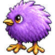

 Wind
Wind Psychic
PsychicTap a stage to read its story.
Fluffyx is a perfectly round purple fluffball with two tiny wide eyes peering out and stubby little orange feet. Its entire body looks like a pom-pom that rolled through a lavender bush. Despite its impractical shape, it rides the Psychic Temple's gentle updrafts by fluffing itself even larger, turning its whole body into a living balloon. It drifts from tree to tree, landing with a soft bounce. Fluffyx has an odd habit of staring at a chosen spot in the temple for minutes on end, eyes going distant - the light-temple keepers say it is watching the psychic currents that run like invisible rivers through the trees.
Field note: Fluffyx's feathers rise and fall in sync with the Psychic Temple's ambient psychic current - it's used as a living barometer by temple-keepers.
Light Grove. Fluffyx and its family are found in the Light Grove. See everyone who lives there.
Share a Bond Food that matches its types to become friends. Fluffyx loves:
A Bond Food is not a trick. It joins your spirit with the Kimuro's spirit, and only when it chooses you.
Print the Kimuro adventure packs: mazes, cards, a board game and Bond Mark medals.
See the printable packs